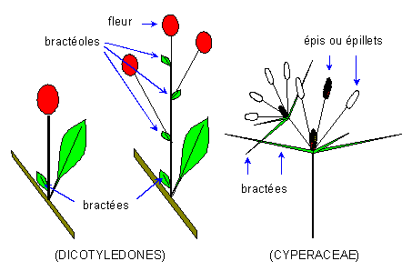

Bract.
A leaf, often modified or reduced, which subtends a flower or inflorescence in its axil.
Bracteole.
A small leaf-like organ, occurring along the length of a flower stalk, between a true subtending bract and the calyx.